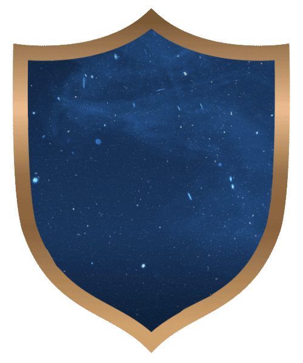

Ravenclaw
- Ravenclaw House prizes learning, wisdom, wit, and intellect in its members. Many Ravenclaws tend to be academically motivated and talented students. They also pride themselves on being original in their ideas, and methods.
- Their emblematic animal is an eagle, their colors are blue and bronze, and the house was founded by Rowena Ravenclaw.
- "Or yet in wise old Ravenclaw, if you've a ready mind, where those of wit and learning, will always find their kind."
Noteworthy Witches & Wizards
